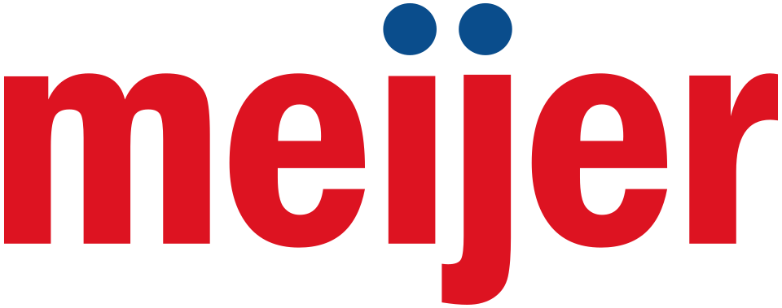

마이어 Meijer
마이어(Meijer)는 미국 미시간주에 본사를 둔 하이퍼마켓 체인이다. 1934년 식료품 점포로 시작했으며, 주식을 공개하지 않은 마이어 가문의 가족 회사로 운영된다.
최종 업데이트

마이어는 어떤 브랜드인가
마이어는 미국 미시간주를 기반으로 하는 하이퍼마켓(할인점의 일종) 체인이다. 슈퍼마켓에서 취급하는 식료품과 일용잡화 외에 의류·가구 등도 함께 취급하는 백화점 식의 대형 점포를 운영한다.
미시간주를 중심으로 오하이오주·인디애나주·일리노이주·켄터키주에 하이퍼마켓 형식의 대형 할인점 200개 가량을 두고 있다. 월마트와 달리 미국 전국적으로 진출하지 않았고, 사업을 크게 확장하지도 않았다.
주식을 주식시장에 공개하지 않으며 마이어 가문의 가족 회사로 운영한다. 하이퍼마켓(슈퍼센터) 개념을 미국에서 가장 먼저 도입한 선구자 중 하나로 알려져 있다.
마이어는 어떻게 시작되고 성장했나
네덜란드 출신의 Hendrik Meijer가 1934년 미시간주 그랜드래피즈 부근의 그린빌에 식료품 점포를 개설한 것이 시초이다. Hendrik Meijer의 아들 Fred Meijer가 아버지의 식료품점을 키워 그랜드래피즈 일대 여러 곳에 지점을 냈다.
1962년에는 그랜드래피즈 시내에 매장면적 17,000 m2의 대형 소매점포를 개설했다. 의류·가구 등도 함께 취급하는 하이퍼마켓(슈퍼센터) 개념을 미국에서 가장 먼저 도입한 선구자 중 하나로 알려져 있다.
월마트·케이마트·크로거·타킷 등은 1980년대에 들어서야 이러한 개념의 점포를 본격적으로 도입하기 시작했다.
마이어의 브랜드 아이덴티티는 무엇인가
전국으로 확장하지 않고 주식도 공개하지 않은 가족 회사이며, 오리건주 중심의 Fred Meyer와는 이름만 비슷할 뿐 관련이 없다.
마이어의 대표 제품과 서비스는 무엇인가
마이어의 점포는 하이퍼마켓 형식의 대형 할인점이다. 슈퍼마켓에서 취급하는 식료품과 일용잡화 외에 의류·가구 등도 함께 취급한다.
1962년 그랜드래피즈 시내에 연 대형 소매점포는 매장면적이 17,000 m2였다. 점포는 미시간주를 중심으로 오하이오주·인디애나주·일리노이주·켄터키주에 200개 가량 있다.
마이어는 지금 어떤 상태인가
본사는 미시간주 워커에 있다. 미시간주를 중심으로 오하이오주·인디애나주·일리노이주·켄터키주에 하이퍼마켓 형식의 대형 할인점 점포 200개 가량을 두고 있다.
주식을 주식시장에 공개하지 않는 마이어 가문의 가족 회사로 운영하며, 미국 전국으로는 진출하지 않았다.
마이어 로고는 어떻게 변해왔나
시기는 위키데이터 로고 기간 또는 위키미디어 커먼즈 파일 정보 기준입니다. 이미지를 누르면 원본 파일과 라이선스를 볼 수 있습니다.
자주 묻는 질문
마이어는 어느 나라 브랜드인가요?
마이어는 미국의 리테일·커머스 브랜드입니다.
마이어는 언제 설립되었나요?
마이어는 1934년 설립되었습니다.
마이어의 브랜드 아이덴티티는 무엇인가요?
전국으로 확장하지 않고 주식도 공개하지 않은 가족 회사이며, 오리건주 중심의 Fred Meyer와는 이름만 비슷할 뿐 관련이 없다.
마이어의 대표 제품은 무엇인가요?
마이어의 점포는 하이퍼마켓 형식의 대형 할인점이다.
마이어의 본사는 어디에 있나요?
본사는 미시간주 워커에 있다.
마이어의 창업자는 누구인가요?
마이어의 창업자는 Hendrik Meijer입니다(위키데이터 기준).
마이어의 공식 웹사이트는 어디인가요?
마이어의 공식 웹사이트는 https://meijer.com 입니다.
출처와 검증
마이어 관련 참고: 공식 웹사이트 · 위키데이터 Q1917753 · 한국어 위키백과 · 영어 위키백과. 브랜드명은 한글과 원어를 함께 표기하되 데이터에 없는 표기는 만들지 않습니다. 기원 국가·설립연도는 검수된 정의문에서 확인된 값을 우선하고, 없을 때만 공식 웹사이트 URL이 일치하는 위키데이터 개체의 값을 씁니다. 웹 첫 보관은 인터넷 아카이브가 공식 사이트 첫 화면을 처음 보관한 날로, 사이트 개설일과 다를 수 있습니다. 위키데이터 값은 2026-11-01 기준입니다.